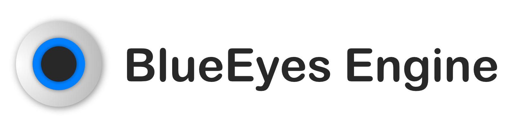

選單


程式版本：1.2.0
日期：2023/01/11
引擎版本：1.0.10
日期：2022/12/21
前端介面語言：HTML、CSS
後端程序語言：Python、JavaScript
支援的作業系統：
Windows 7 或以上
Windows 11 (Windows on ARM)
macOS High Sierra (10.13) 或以上
Linux
使用的第三方套件：
python-eel/Eel
ranaroussi/yfinance
使用者介面 / 程式設計：© 2022-2023 鐘柏倫
Python 3.8.15
Yahoo!、Y!Finance 與 Yahoo! finance 是 Yahoo, Inc. 註冊的商標
免責聲明：僅供個人用途、原始碼交流、教育學習使用